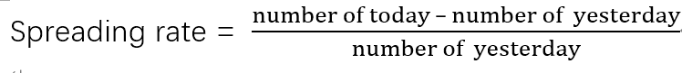
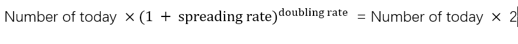

download the data automatically
data = pd.read_csv("https://health-infobase.canada.ca/src/
data/covidLive/covid19.csv")
showing the number of total cases in each province over time. link to source code
showing the number of individuals tested in each province over time. link to source code
showing the number of new cases per day.
link to source code
calculates the doubling rate of given arguments with the following formulas. And save it into .csv file.
 Plot the doubling rate for selected provinces using the data saved.
link to source code
predicts the trends for the upcoming
two weeks of data.
link to source code
demonstrating the data changes over time in videos.
link to source code
Show the total cases of each province in a pie chart.
link to source code
Plot the changes of active cases over time.
link to source code